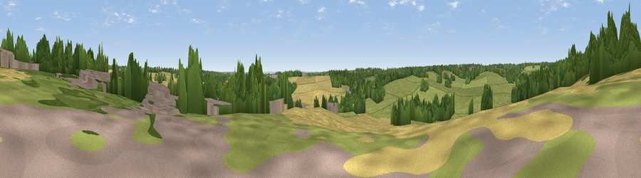

Viewpoint near Cuffley
#40320 in England · top 35% of its area beats it · near CuffleyThe view, rendered

A 360° render of this exact spot computed from the terrain model, tree cover and land cover — summer colours, afternoon light, calibrated against photographs of famous viewpoints. Real trees, hedges and buildings will differ in detail.
The panorama
Grey silhouette: terrain skyline in each direction (720 bearings, Earth curvature and refraction included). Dashed green: skyline with trees (+15 m) and buildings (+8 m) as obstacles. Blue strip: how far the ground is visible on each bearing.
Where the view opens
Wedge length = distance to the farthest visible ground on that bearing (vegetation-aware). Rings at 10, 25 and 50 km.
What fills the view
41% grassland · 26% woodland · 25% cropland · 7% built-up
Angular shares of the visible panorama (visual magnitude), not map area. Landscape diversity 0.55 (0–1 Shannon).
Key numbers
More beautiful places nearby
The staircase of upgrades: each row has a higher view potential than everything closer. Driving times are estimates from straight-line distance, calibrated against real road routing — check an actual route before setting out.
| Place | Direction | Drive | Score |
|---|---|---|---|
| Viewpoint near Cheshunt | E · 8 km | ~17 min | 39.9 |
| Viewpoint near Lower Nazeing | E · 9 km | ~17 min | 42.5 |
| Yardley Hill | SE · 10 km | ~20 min | 43.5 |
| Viewpoint near Sewardstonebury | ESE · 11 km | ~20 min | 45.4 |
| Viewpoint near Sewardstonebury | ESE · 11 km | ~21 min | 49.8 |
| Viewpoint near Sewardstonebury | SE · 11 km | ~21 min | 50.3 |
| Viewpoint near Wood Green | S · 12 km | ~23 min | 51.8 |
| Harrow on the Hill | SW · 21 km | ~35 min | 60.7 |
51.70594, -0.11894 · source: screening · position refined by local search. Computed location — check access rights before visiting.